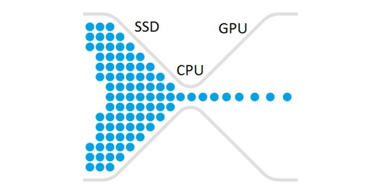

𝘽𝙤𝙩𝙩𝙡𝙚𝙣𝙚𝙘𝙠𝙞𝙣𝙜
Welcome to
Bottlenecking is when one of the parts in your PC is holding back another part of the PC or is holding back the whole PC from providing good or full performance. It is called bottlenecking because, like the neck of a bottle, it stops everything from getting through and streamlines it down. If you have a thick road tunnel, more cars can get through at a time than if you have a thin and small road tunnel.
Bottleneckng is very important to take into account when choosing parts for a PC. If you GPU is miles more expensive and newer than your CPU then your GPU could be being bottlenecked by your CPU and the same with CPU to GPU. This is why you need to make sure you baclence out your budget so you evenly spend your budget on everything.

When putting together parts for a PC You could use the bottleneck calculator to find out is your CPU or GPU are being bottlenecked.